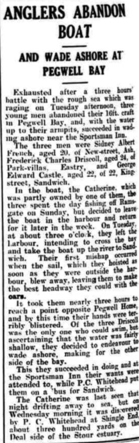
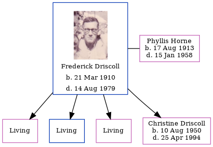

Frederick Charles Driscoll 1910 - 1979
[ Home ] | [ Calendar ] | [ Surnames Index ] | [ Errors ] | [ Family History ]Frederick Driscoll, the husband of Phyllis Horne (the second cousin twice-removed on the father's side of Nigel Horne), was born in Sandwich, Kent, England on 21 Mar 19101,2,3, was baptised there at St Clement's Church on 10 Apr 1910 and married Phyllis (with whom he had 4 children: Joyce M, Brian Michael, Denise Y S and Christine Phyllis, along with 3 surviving children) in Thanet, Kent, England around Aug 19364.
During his life, he was living at 9 The Chain in Sandwich on 2 Apr 19115; and at Park Villas, Eastry, Kent in 1934.
He died on 14 Aug 1979 at Sea Bathing Hospital, Westbrook, Kent2.
Children
- Christine Phyllis was born on 10 Aug 1950
Citations
- England & Wales births 1837-2006 - Findmypast
- England & Wales deaths 1837-2007 - Findmypast
- Kent Baptisms - Findmypast
- England & Wales marriages 1837-2008 - Findmypast
- 1911 Census for England & Wales - Findmypast (was age 1 and the son of the head of the household)
Media
Frederick Driscoll
Thanet Advertiser - 23 Oct 1934

England & Wales deaths 1837-2007 - BMD/D/1979/3/AZ/000262/145
England & Wales deaths 1837-2007 - BMD/D/1979/4/AZ/000296/089
England & Wales marriages 1837-2005 - BMD/M/1936/3/AZ/000436/126
Kent, Canterbury Archdeaconry baptisms - GBPRS/CANT/B/96781951
England & Wales births 1837-2006 - BMD/B/1910/2/AZ/000170/039
1911 Census for England & Wales - GBC/1911/RG14/04551/0221/4
Family Tree
Map
Generated by ged2site. Last updated on Jul 3, 2024
Known Issues
Baptism information not used to determine a parent
Residence record for 1934 contains no citation
No records of living with anyone
1939 UK register information missing